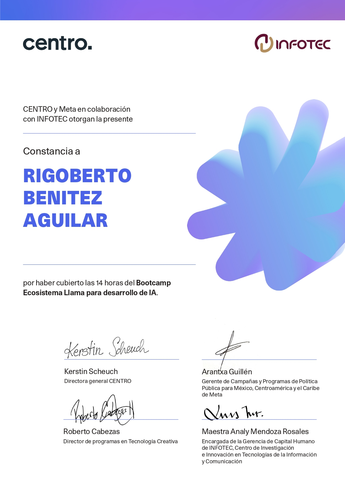
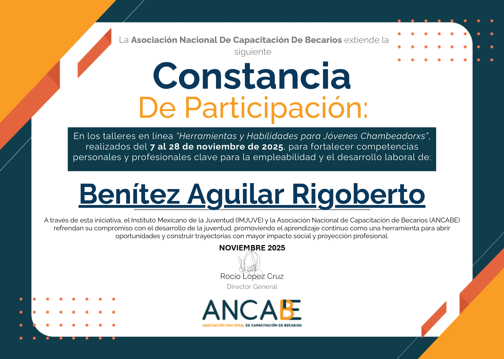
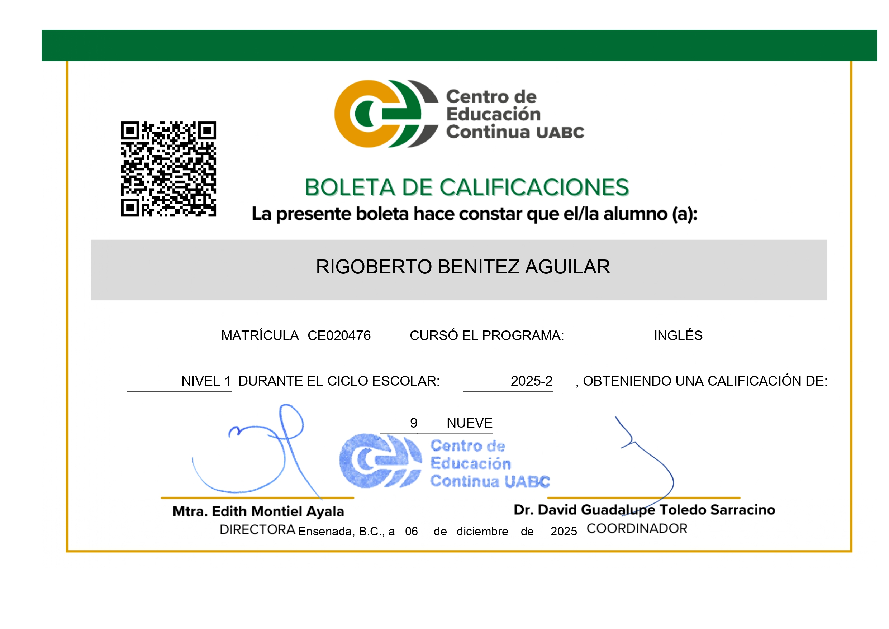
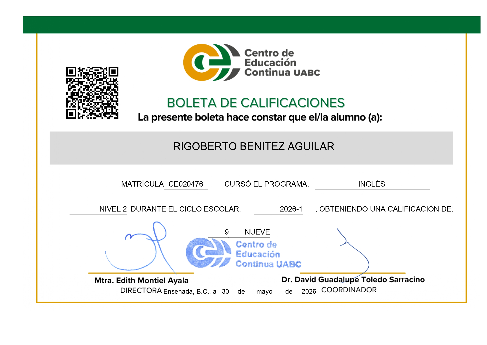
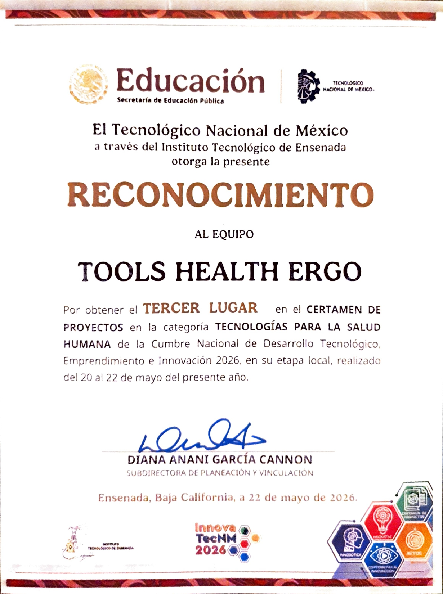
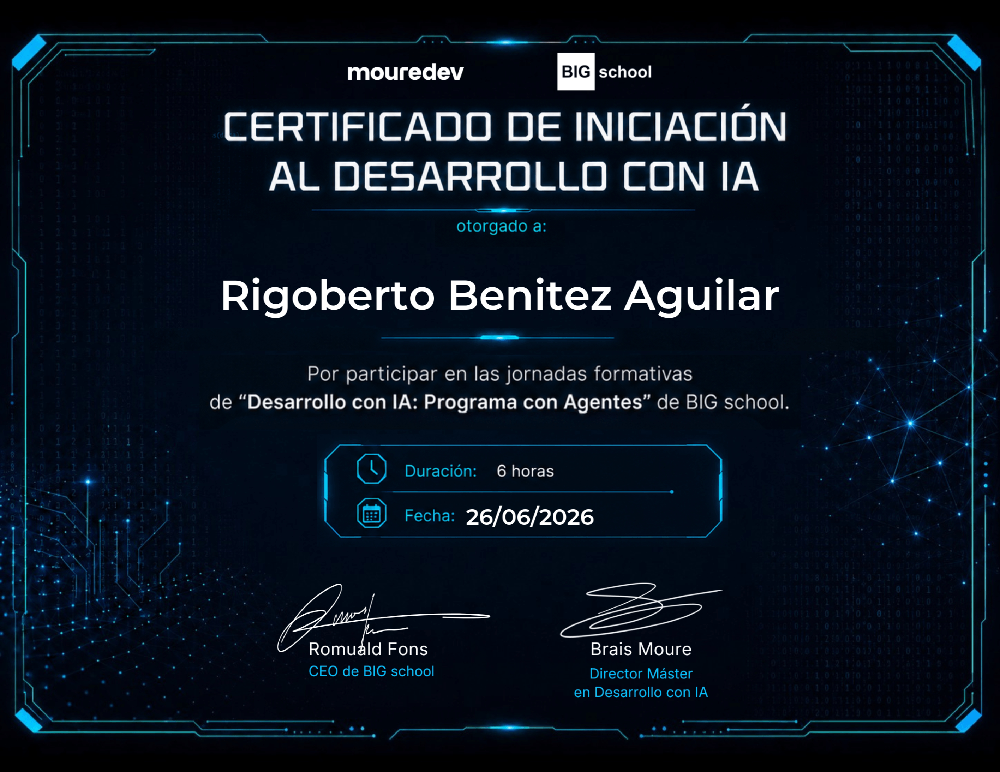
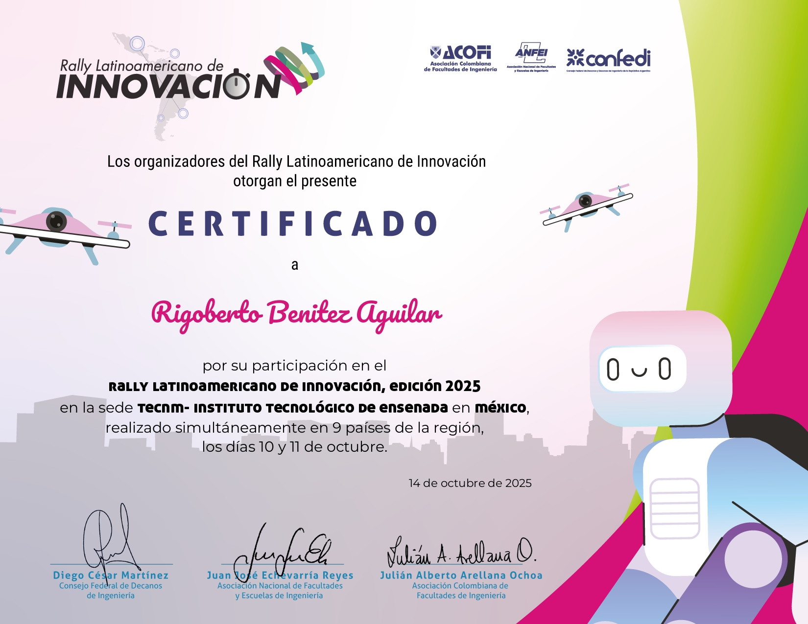

Curso en el cual adquirí conocimientos respecto a la herramienta OLLAMA, la cual permite correr distintos modelos de inteligencia artificial en la computadora local, sin necesidad de internet. Implantado por CENTRO

Curso en el cual adquirí conocimientos respecto a la herramienta OLLAMA, la cual permite correr distintos modelos de inteligencia artificial en la computadora local, sin necesidad de internet. Implantado por CENTRO

Curso en el cual aprendí respecto a ciertas herramientas y habilidades que debemos aprender a usar y desarrollar para poder tener éxito en el ámbito laboral, como lo son la comunicación, el trabajo en equipo, la creatividad, la innovación, entre otras.
Curso en el cual aprendí muchos de los fundamentos respecto a la ciberseguridad, métodos de ingeniería inversa, niveles de "Hackers", comandos para Kali Linux, tipos de riesgos, etc. Las cuales son muy importantes si te quieres especializar en ciberseguridad.

Curso en el cual aprendí las cosas básicas y necesarias para comenzar a aprender y a hablar el idioma extranjero inglés, desde el famoso verbo to be, tiempos verbales como el presente simple, verbos, vocabulario, etc. Muy importante este idioma para mi futuro laboral.

Curso en el cual perfeccioné lo visto el nivel anterior y profundicé más en el idioma. Por ejemplo, aprendí nuevos tiempos verbales como el presente perfecto y el futuro continuo, pedir en restaurantes, describir tanto personas como lugares, etc.

Constancia que demuestra mi participación en el Innovatec pasado (siendo el primero en el que participo), en el cual colaboré junto compañeros de la carrera de Ingeniería Industrial, yo fuí quien desarrolló un prototipo sobre una aplicación que facilitaría el análisis de la ergonomía en una empresa, siendo la 1ra aplicación para México.

Curso en el cual aprendí las cosas básicas que se deben de aplicar para poder utilizar de la mejor manera la IA en la programación, principalemente se observaron los agentes de IA, los cuales tienen acceso total a tu código y cuando le pidas realizar cambios tendrá mejor contexto sobre cómo funciona tu código. Aunque debes de utilizar muchas herramientas extras para que los agentes de IA sean muy efectivos.

Certificado que demuestra mi particpación en el Rally Latinoamericano del año pasado.